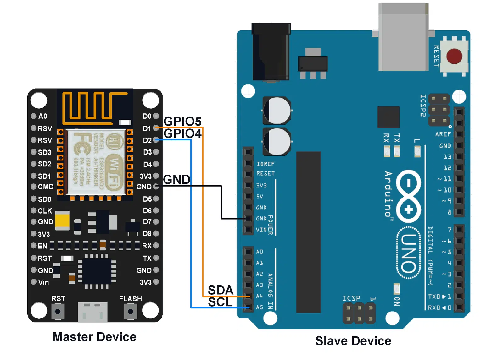

Comment programmer l'ESP32 ?
L'ESP32 peut être programmé de plusieurs manières, avec les environnements de développement tels que l'IDE Arduino, MicroPython, ou PlatformIO. La méthode la plus courante est l'utilisation de l'IDE Arduino, qui permet une programmation simple en utilisant le langage C/C++.
Voici un exemple de code pour démarrer avec l'ESP32 en utilisant l'IDE Arduino :
